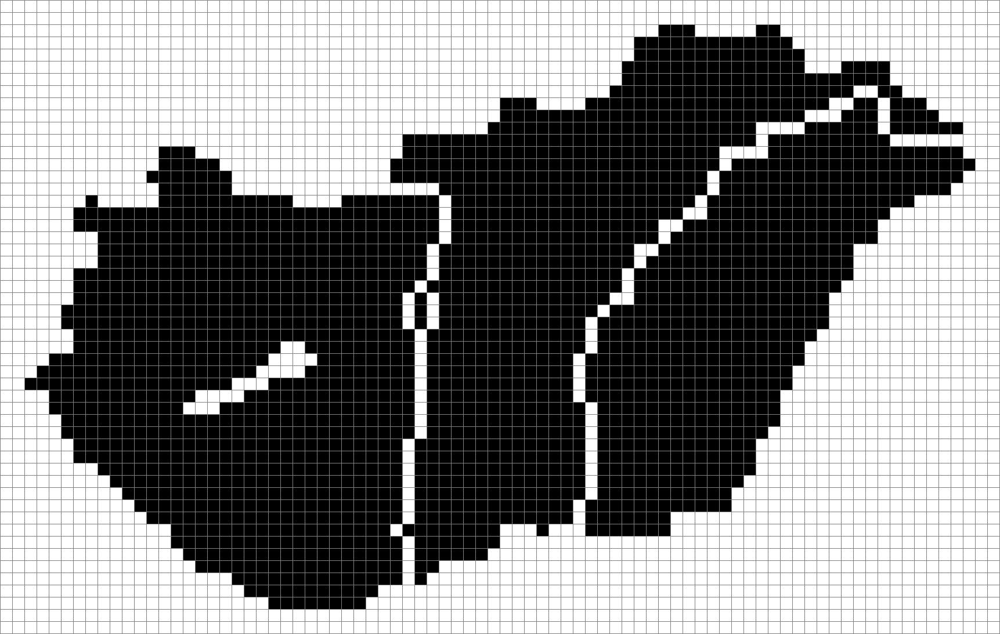
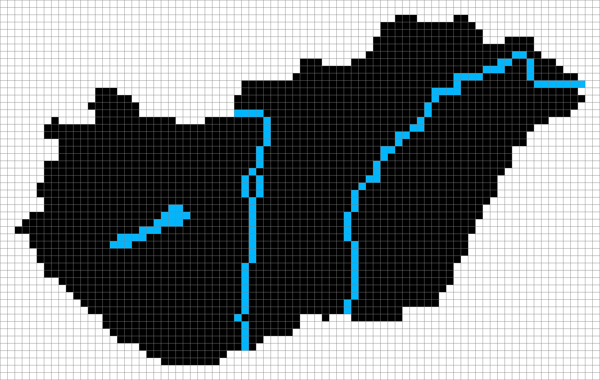
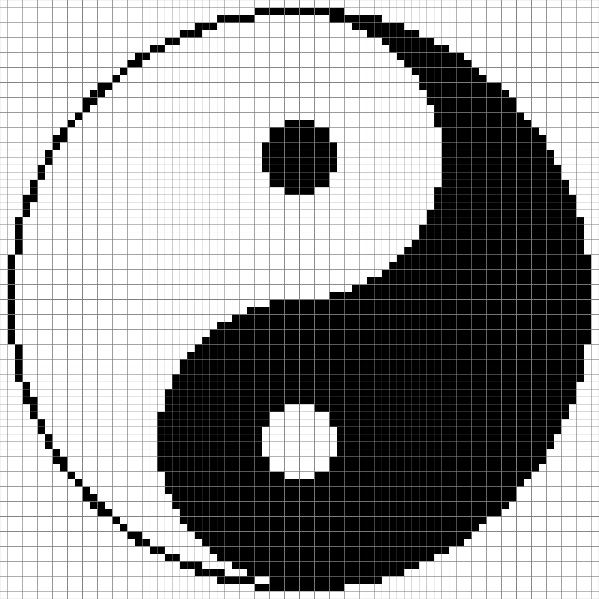

Magyarország + vizek

Magyarország + vizek (3 színű)

Jin-jang

Balaton
Föld

Szabadság-szobor

Miután horgolási szakértőkkel konzultáltam, megértettem, mi volt a gond a minták leszámolásával. Minden második sort visszafelé kell horgolni: ugyanúgy balról jobbra haladva, csak megfordított anyaggal, a visszáján. Ezért ezeket a sorokat visszafelé kell leszámolni is. Kijavítottam a leszámolásokat, és beletettem egy irányjelző nyilat, ami megmutatja, hogy az adott sort a képen melyik irányban kell számolni. A sorok a képen alulról felfelé vannak számolva. Remélem, most már rendben lesz! 🙂